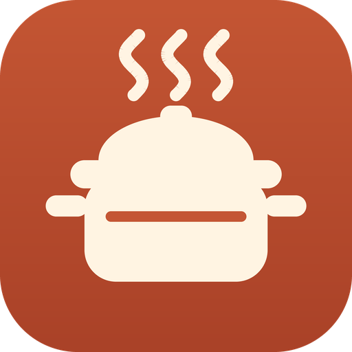

Recetario de Juan
Abriendo el recetario…
Abrir el recetario
Para instalarla
En el móvil Android, con Chrome: menú ⋮ › «Instalar aplicación» o «Añadir a pantalla de inicio».
En el ordenador, con Chrome o Edge: icono de instalar en la barra de direcciones, o menú › «Instalar Recetario».
En el ordenador, con Chrome o Edge: icono de instalar en la barra de direcciones, o menú › «Instalar Recetario».